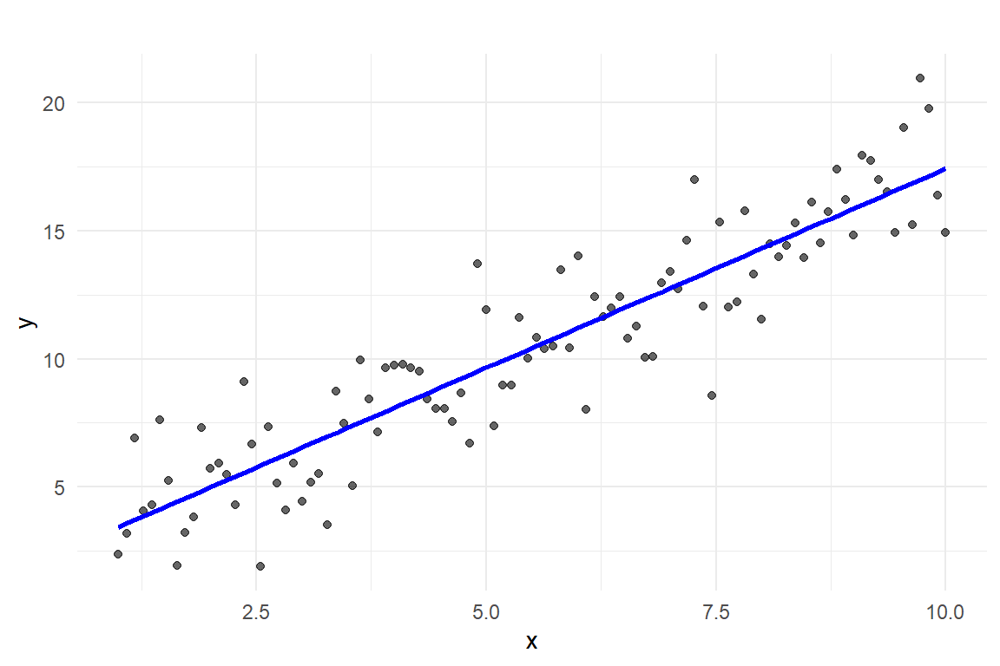
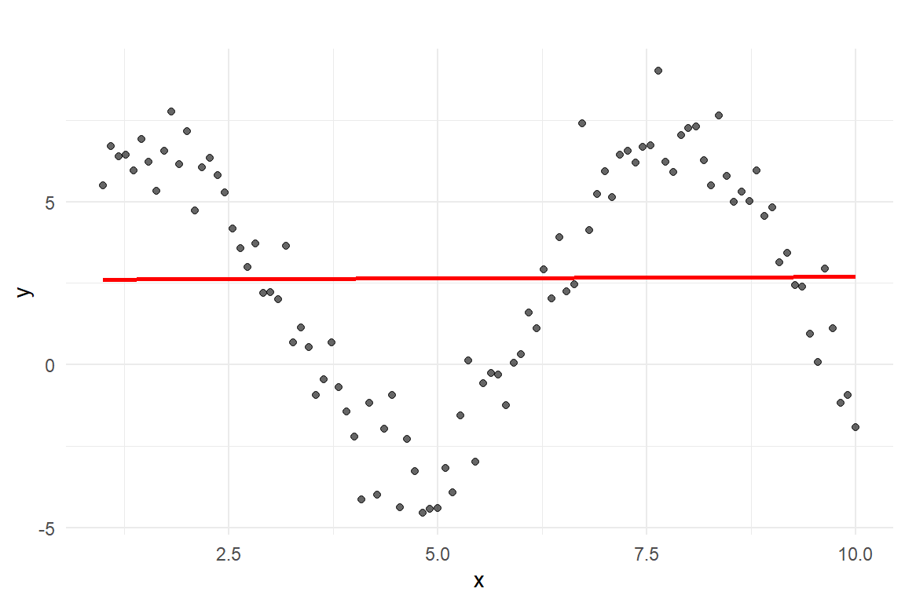
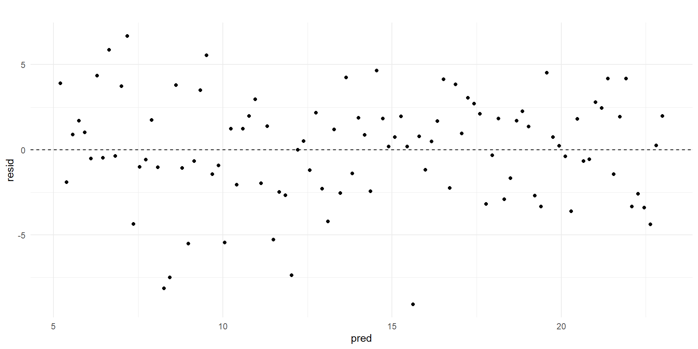
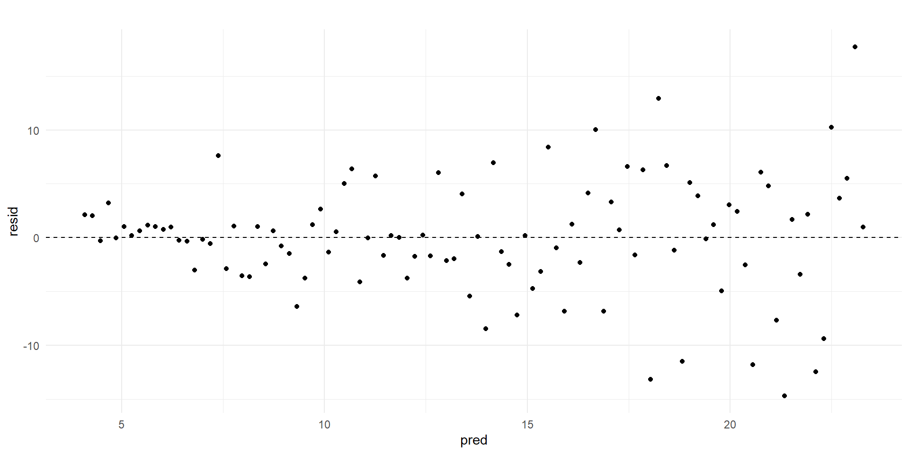
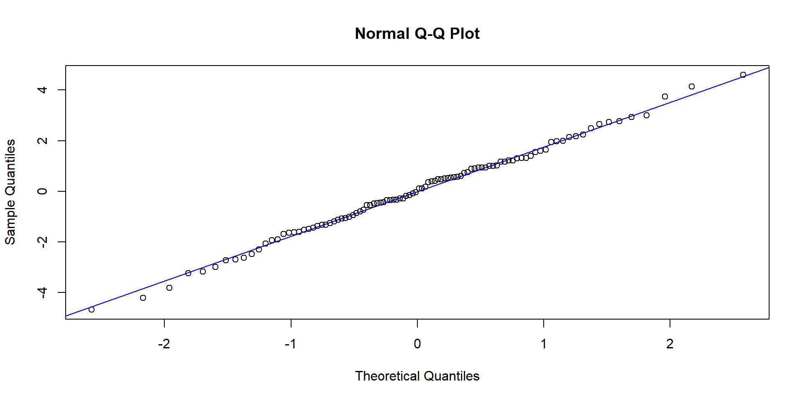
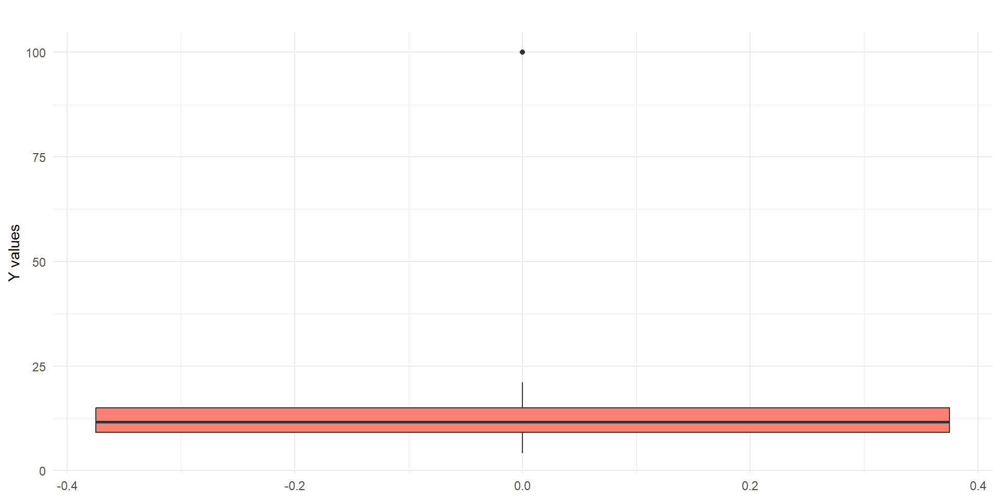

Lecture 10 - Assumptions of Regression Analysis
2025-11-20
Why Regression Assumptions Matter
Linear regression relies on several statistical assumptions. Violating them can lead to:
- Biased estimates
- Incorrect standard errors
- Misleading p-values
This week, we examine each regression assumption and present visual examples to demonstrate both adherence and violations.
Assumption 1: Linearity
Linear regression assumes that the relationship between each predictor ( X ) and the outcome ( Y ) is linear.
This means that the effect of ( X ) on ( Y ) can be captured by a straight line:
\[ Y = \beta_0 + \beta_1 X \]
Why linearity matters
- The slope \(\beta_1\) represents the expected change in \(Y\) for each one-unit increase in \(X\).
- If the true relationship is curved, the model can misrepresent both the size and direction of the effect.
How to check
- Create a scatter plot of \(Y\) versus \(X\).
- Add a straight trend line (e.g., via or your software’s default fit line).
- Ask: Does the line follow the pattern of the data?
Linearity Holds
Linearity Violated
Assumption 2: Correct Scale of Measurement
Regression treats the outcome (Y) as numerical and continuous.
\[ Y \in \mathbb{R}, \quad X \in \{\text{continuous or dummy-coded}\} \]
Why it matters
If \(Y\) is categorical or ordinal, or if an ordinal \(X\) is incorrectly treated as numeric, the model assumes artificial distances between categories. As a result, residuals \(\epsilon_i\) lose their proper interpretation.
How to check
- Inspect variable metadata (e.g., Variable View).
- Confirm that:
- \(Y\) is truly continuous
- Categorical predictors are dummy-coded
- \(Y\) is truly continuous
Assumption 3: Reliability of Predictors
Linear regression assumes that each predictor variable \(X\) is measured reliably.
This means that the observed values of \(X\) reflect the true underlying construct with minimal random error.
\[ X_{\text{observed}} = X_{\text{true}} + \varepsilon \]
Why it matters
- If \(X\) contains a large amount of random measurement error, the slope estimate \(\hat{\beta}_1\) becomes biased toward zero.
- This phenomenon is known as attenuation bias.
- Standard errors increase, making it harder to detect true effects.
- Result: underestimation of the relationship between \(X\) and \(Y\).
How to check
Reliability is not typically visible in the raw data. Instead:
- If \(X\) is a multi-item scale (e.g., a questionnaire):
- Check internal consistency, such as Cronbach’s \(\alpha\)
- If repeated measurements are available:
- Examine the test–retest correlation
- If \(X\) is a single-item or observational measure:
- Rely on validation studies or expert-designed instruments
Assumption 4: Homoscedasticity
Linear regression assumes that the variance of the residuals stays constant across all levels of the predicted values.
This is known as homoscedasticity.
That means the model’s prediction accuracy remains relatively consistent across the range of the predictor.
In other words, for every value of \(X\), the spread of actual \(Y\) values around the regression line should be roughly the same.
Why it matters
- If residuals fan out or contract as predictions increase, the model is heteroscedastic.
- This leads to:
- Biased standard errors
- Unreliable confidence intervals
- Incorrect \(p\)-values
How to check
- Save residuals and predicted values from your regression model.
- Make a Residuals vs. Predicted Values plot:
- A random cloud is good ✅
- A funnel or cone shape is a sign of violation ❌
Homoscedasticity – Residuals Have Constant Spread
Heteroscedastic data (Cone shape)
Assumption 5: Independence of Observations
Linear regression assumes that each observation is statistically independent from the others.
That means each row in your dataset must represent a distinct, unrelated case.
\[ \text{Cov}(Y_i, Y_j) = 0 \quad \text{for all } i \neq j \]
Why it matters
- Violations of independence lead to underestimated standard errors.
- This inflates Type I error rates — p-values appear smaller than they should.
- You may falsely conclude an effect exists when it doesn’t.
This is a common problem when:
- Data are nested (e.g., students within schools, patients within hospitals)
- Repeated measures are used (e.g., multiple responses from the same person)
How to check
Independence is a design issue:
- Review how the data were collected.
- Ask: Are some rows likely to be more similar to each other than others?
Check for:
- Clustered or hierarchical sampling (e.g., survey within regions or groups)
- Longitudinal or repeated-measures data
Assumption 6: Normality of Residuals
Linear regression assumes that residuals are normally distributed.
This assumption is mainly important for computing:
- Confidence intervals
- p-values
\[ \varepsilon_i \sim \mathcal{N}(0, \sigma^2) \]
Why it matters
- In small samples, violations can distort inference.
- The sampling distribution of the regression coefficients depends on residuals being normal.
If this assumption is violated:
- Standard errors and p-values may be inaccurate
- Especially problematic for small ( n )
How to check
- Save the residuals from your model
- Plot their distribution using:
- Histogram
- Q–Q plot
- For small samples:
- Use the Shapiro–Wilk test
Residuals Follow a Normal Distribution
Residuals Deviate from Normality

Assumption 7: No Outliers
Linear regression assumes that no single data point exerts excessive influence on the model.
This means that:
- No observation should dominate the slope estimate
- Outliers can distort the direction, size, and significance of coefficients
Why it matters
- High-leverage or high-influence points pull the regression line
- Can produce misleading estimates or flip the sign of coefficients
- Standard errors and p-values become unreliable
How to check
- Use box plots to check for univariate outliers
- Examine diagnostic statistics:
- Cook’s distance
- Leverage
- DFITS
No Influential Outliers Present

An outlier detected
Assumption 8: No Multicollinearity
In multiple regression, predictors must be sufficiently distinct from one another.
Multicollinearity occurs when two or more predictors are highly correlated, making it difficult for the model to estimate their unique effects.
\(\text{Corr}(X_i, X_j) \approx 1 \quad \Rightarrow \quad \text{Unstable estimates}\)
Why it matters
- Coefficient estimates become unstable
- Standard errors inflate
- p-values may become nonsignificant even if the predictor matters
- Signs of coefficients may flip unexpectedly
How to check
- Examine correlation matrix of predictors
- Compute Variance Inflation Factor (VIF)
- A common rule:
- VIF > 5: potential issue
- VIF > 10: serious multicollinearity
- VIF > 5: potential issue
- A common rule:
Summary: Assumptions of Linear Regression
Linear regression relies on several core assumptions to produce valid, interpretable results. Here’s a recap:
- Linearity
- Correct Scale of Measurement
- Reliable Predictors
- Homoscedasticity
- Independence
- Normality of Residuals
- No Influential Outliers
- No Multicollinearity
🧠 Final Thoughts
- Always visualize first — plots often show problems before numbers do.
- Violations ≠ automatic disqualification — but require caution or adjustments.
- Regression is powerful, but only when used with respect for its assumptions.